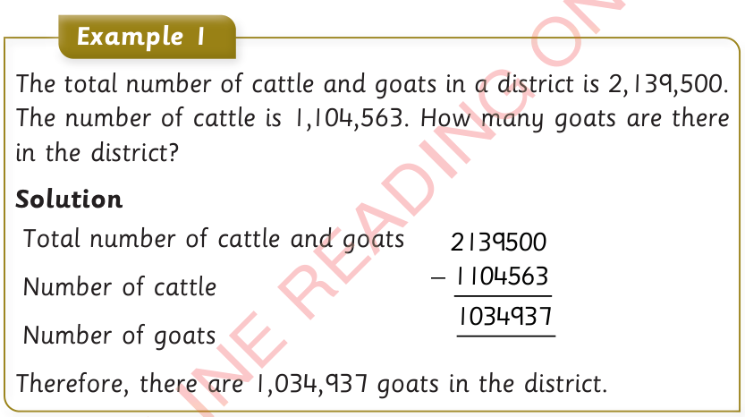
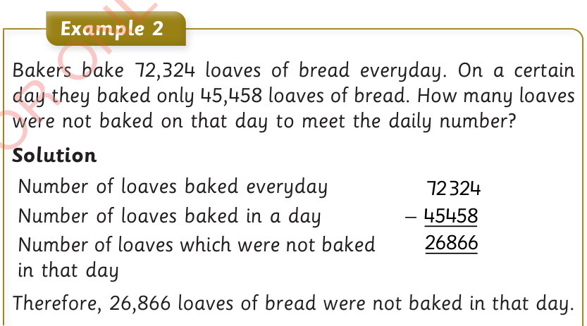

Word problems involving subtraction of whole numbers

Example 1
The total number of cattle and goats in a district is 2,139,500. The number of cattle is 1,104,563. How many goats are there in the district?
Solution
Total number of cattle and goats 2139500
Number of cattle – 1104563
Number of goats 1034937
2139500
−
1104563
1034937
Therefore, there are 1,034,937 goats in the district.

Example 2
Bakers bake 72,324 loaves of bread everyday. On a certain day they baked only 45,458 loaves of bread. How many loaves were not baked on that day to meet the daily number?
Solution
Number of loaves baked everyday 72324
Number of loaves baked in a day – 45458
Number of loaves which were not baked in that day 26866
72324
−
45458
26866
Therefore, 26,866 loaves of bread were not baked in that day.